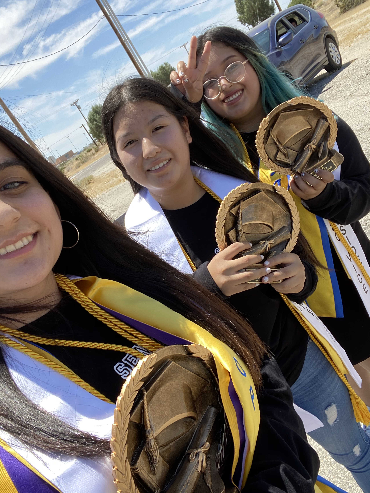
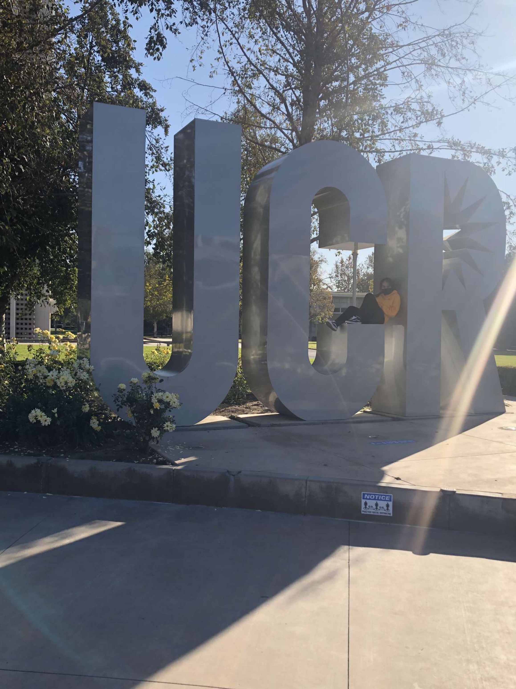
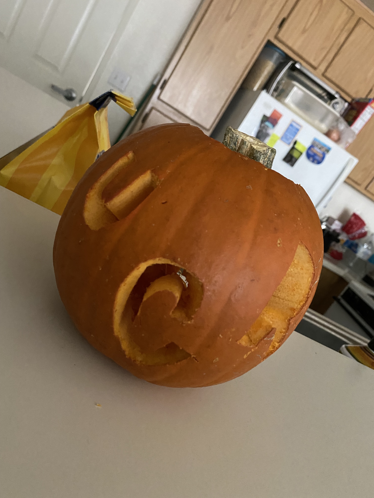
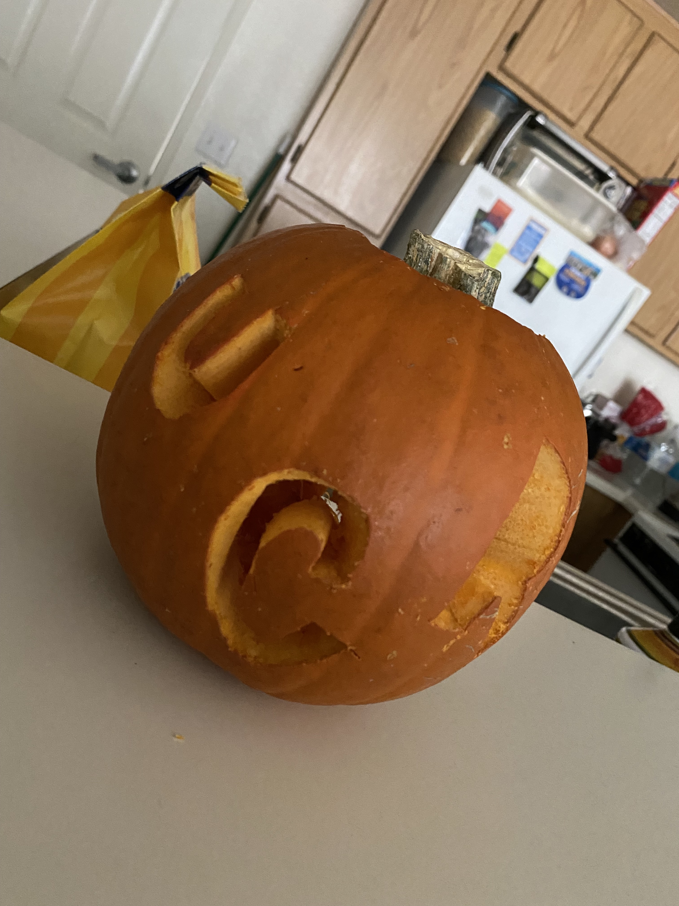

Haley Alba
I'm a second year Sociology student, looking to double major in Education, at University of California, Riverside. I was born and raised in SoCal, specifically in a desert area. I come from a low income Hispanic family making me a first generation
college student.
I have volunteered at my local elementary, middle, and high school as an interpreter for teachers who only spoke English.
My community has a heavy Hispanic population and thus I was called upon to always interpret at events like parent conferences, open houses, and presentations.
In addition, I also volunteered in the elementary school after school program where my tasks included helping Spanish speaking students with their English. My time there would also include working in the main office as an interim secretary. I was trusted to fill paperwork with parents that could not do it themselves.
I admit at times it was difficult because I grew up hearing the street Spanish rather than the formal one and so English words often were not translated word for word but I made sure parents understood everything they needed to help their children.
In my years of high school, I always tried to be as involved as I could. One of my involvements was being manager of the girls’ basketball team for three years. My tasks there included ordering new uniforms when needed, keeping track of their stats, and just in all making sure the team had all they needed. My most important task was keeping track of their stats because it determined each individual’s awards and ranks.
I went in not knowing any basketball terminology but I learned all of it as I went. Most nights I would stay at school until nine at night and still have homework to do.
My time management skills were really tested but to this day I believe I can manage pretty well.
AVID has been a big part of my life. It helped me realize college was something I wanted to do. I was a member of this program from seventh grade to my senior year of high school.
I will forever be grateful for this program and thus why I decided to become a tutor again. I was able to be an AVID tutor for tutorial sessions for the first time my sophomore year of high school. I got my training and certificate to be able to tutor middle school students. There was no money to hire college students to be tutors as that is what is usually done so I volunteered. I realized then that I enjoy tutoring.
This is the reason why I applied to be an AVID tutor at a middle school around my university. The district out here actually has money to pay college students, so as well as getting my experience I’m also earning a wage, in order to continue my education. I have more responsibilities at this job too because I actually have to input grades for all my group of students. I rely on all my years of AVID to succeed here.
Experience
AVID Tutor
• Answer homework help for all middle school courses
• Grade their tutorials
• Tutor for grades 6th, 7th, and 8th
Cashier
• Memorized produce codes for faster checkout
• Cleaned whole front part of the store
• Counted money after every shift
Spanish Interpreter
• Interpreted for all parent conferences and schoolwide presentations
• Created Spanish versions of teachers' take home flyers
•Learned how to maintain peace within parents
Education
UC Riverside
West Shores High School
Portfolio




